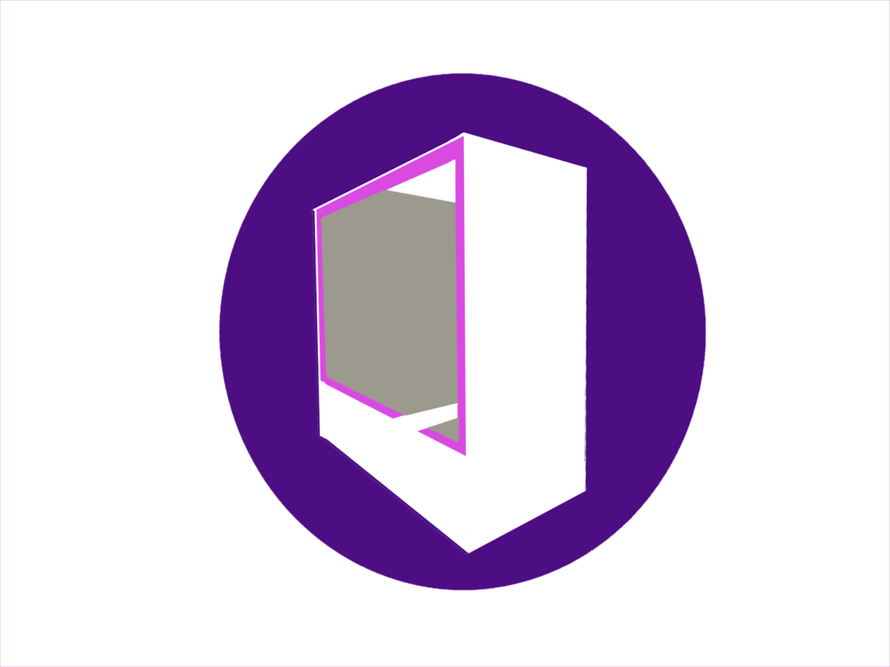
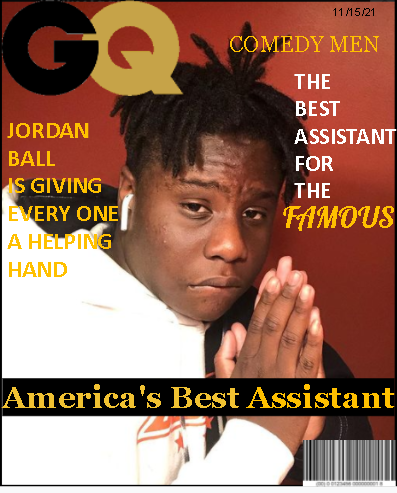
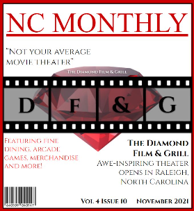

Grave Tech | TAKE IT TO THE GRAVE

"We are an Industrial Engraving Technology company primarily focused on a professional job for a cheap price. Big machines for companies and engineers, but also smaller products for household items, small projects, small businesses. We focus on creating something that can be used for a wide variety of people." ~ Founder, Leo Davis-Ding
Parfait Inc. | Tech For You, By You
"Parfait is an uprising tech company that is focused on providing a quality product to consumers that perfectly matches their interests at a fair price. Our main attraction is our completely modular keyboard, in which each layer of the keyboard can be magnetically attached, and customized." ~ Founder, Rajin Islam
Ah'Mazing PCs, LLC | You Choose It, We Deliver It
"Together with Logitech, Ah’Mazing PCs works to help you build the PC of your dreams. We wish to promote the message of creativity and provide entertainment to all kinds of people." ~ Founder, Ahmed Ahktar
Tran's Tech | Innovation that TRANSforms the Definition of Tech
"Tran’s Tech is a startup Technology and Repair shop that first opened in the later months of 2021. We operate a store that seems simple at first glance but out class all other competitors in every other aspect. But we can do more. We hope to further increase sales from the center of our customer base and through this hope to use your investment to open a secondary store." ~ Founder, Austin Tran
Comdey Men | Comdey Men 2 You
"Comdey Men is the best Assistance service in america we are available everywhere and help anyone who needs assistance know matter if its little tasks like cleaning around the house or needing to get a coffee we will be there for you." ~ Founder, Jordan Ball
Chris' Pawnshop | You Need It, I Got It!
"Chris’ Pawnshop is a nice welcoming environment where you can walk and have a conversation about your day. We are the best friend that you would ask to lend you some money." ~ Founder, Chris George
Culinary Arts Worldwide
"Our restaurant offers a vast array of dishes from around the world with our continuously expanding menu to ensure we live up to our mission of spreading food around the world and providing the absolute best experience for customers. We are a luxury dine-in restaurant food chain/brand." ~ Founder, Caleb Adams-White
The Diamond Film & Grill
"The Diamond Film & Grill takes your average movie watching experience to the next level, combing a movie theater with a restaurant. The design is personalized, comfy, and unique, allowing you to watch a movie while enjoying a good dinner." ~ Founder, Jackson Lehman
Humiji
"Humiji offers dockless, rental-e scooters. You no longer need to look for parking; No need to worry about traffic; and It's a potential option to replace your car." ~ Founder, John Knott